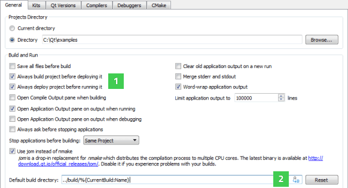

Customizing the Build Process
To specify the relationship between the release, build, and deploy configurations, select Tools > Options > Build & Run. By default, the Always build project before deploying it and the Always deploy project before running it options (1) are enabled. Therefore, when you select the Run function, Qt Creator checks for changes in the project files and also builds and deploys the project if necessary.

On Windows, you can use jom instead of nmake for building the project to distribute the compilation process to multiple CPU cores. You can download jom from Qt Downloads. To use jom, select the Use jom instead of nmake check box. Deselect the check box if you experience build problems.
You can specify the default build directory in the Default build directory field using Qt Creator variables (2).